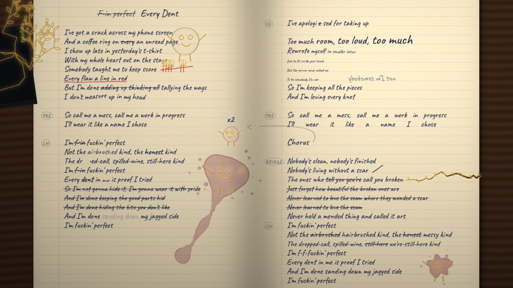
Late at night, Amber, before she met Ink, writes this song in her notebook as she sings it. Every line she tried first is there, crossed out, and every mark her day leaves lands on the page: a cracked phone, a coffee ring, a red-pen score, a glass of wine knocked over. When she sings 'mended', gold ink draws each mark into something, and in the last chorus those drawings sing along, rowdily. It ends on the whole song on one scribbled spread, warts and all.
Version 3: the plan as it stood on 6 November 2026, before the first rough cut, with the songwriter's answers to v1 and v2 first, below. Sixteen frames drawn by code from one model of her notebook, every line, tried line and mark timed to the song. No hands and no pen: the words write themselves.
Kept as it stood. The same model, given a camera, became the film over seven lenses and twelve roughs: her pen failing and skipping, the marks drawn into singers, the notebook slammed shut. The making-of tells how; the film is on YouTube.
“Sounds fun! Choir isn't really the word I'd use, more like rowdy singing but yes”
Each character on its own beat, bobbing, arms going, mouths wide: never in step.
“I like the idea of reusing the chorus, yes”
Chorus 1 as written, lit again as she sings it; the final chorus written fresh because it changed.
“I feel like it's likely to look like a gimmick unless we can either make use of it, or animate it with the writing, but even so it would need a hand, which would potentially be a nightmare to get right.”
The words write themselves on the page. The songwriter's 'I do like the idea of getting smudged ink from her hand though' is kept for the content lens: the one trace of her hand.
“I like this. It has a unique feel, and I think it could work really well.”
Next, the film's map: every moment with a frame of the rough, weighed lens by lens, content first.
“No hands I think, they're a nuisance to get right, I'm not even sure if we need the pen but can be open minded on these points”
No hands; the pen shown both ways in verse 1 (and dropped, above).
“Yes, this seems to fit.”
Her notebook under the lamp is the base; the look's lens refines it.
“spilled wine is often (but not always) a spilled glass”
Chorus 1's glass goes over by the margin: the wine puddles there, and a run escapes down the page to the foot. Chorus 2's refill leaves a ring; the final chorus a splash.
“I like her page, as she write the lyrics. We can cross out previously tried lines (I think we have a fairly detailed history of them) and the end result is the full song, warts and all on the scribbled page.”
The history is in the songwriter's Lyricsmith: the song began as Wren's draft on a blank page on 22 August and went through their revisions overnight. Eleven lines changed, and those tries are the ones struck here, each where it was replaced (data/drafts.json).
“Let's go with early Amber, before she met Ink”
So her hand carries no ring, and we never see her face (Amber's films never tie her voice to her face).
“I think it's literally the song as she's writing it; this is her notebook, her thoughts”
So the page can do what thoughts do: words knocked askew, a mirror that gives her size back, stains that come alive. It stays a real notebook on a real desk.
Comment on a section with its button, or in comment mode by clicking anywhere in it or on a frame.
I've got a crack across my phone screenAnd a coffee ring on an unread pageI show up late in yesterday's t-shirtWith my whole heart out on the stageSomebody taught me to keep scoreEvery flaw a line in redBut I'm done tallying the waysI don't measure up in my head
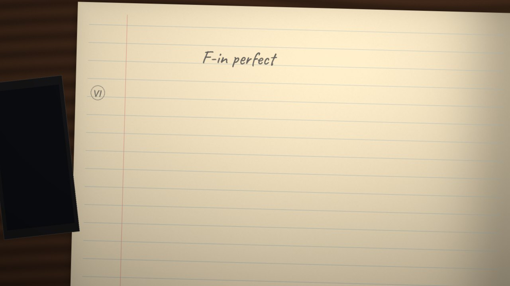
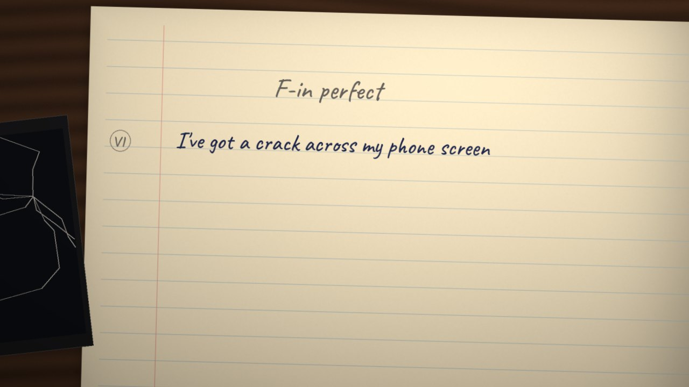
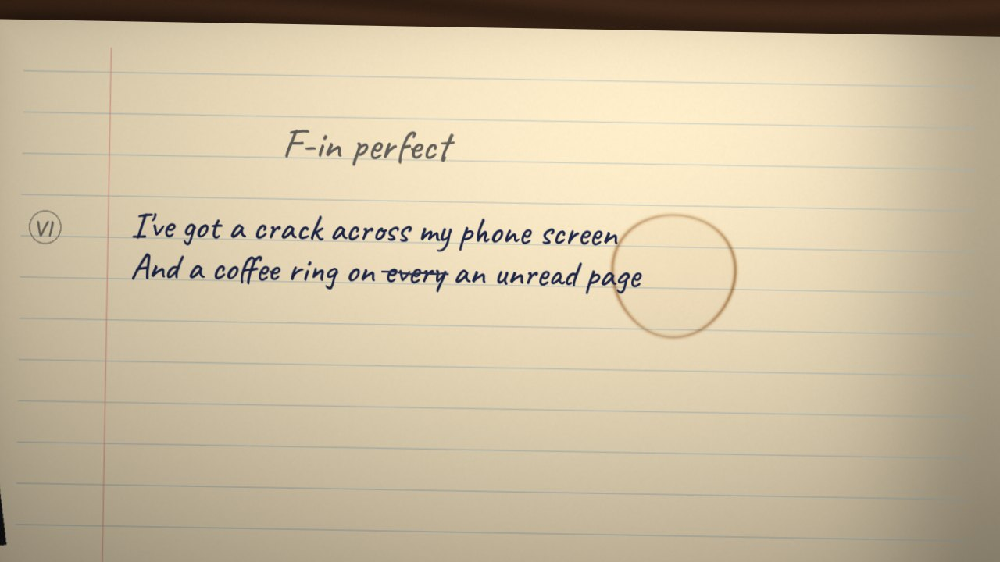
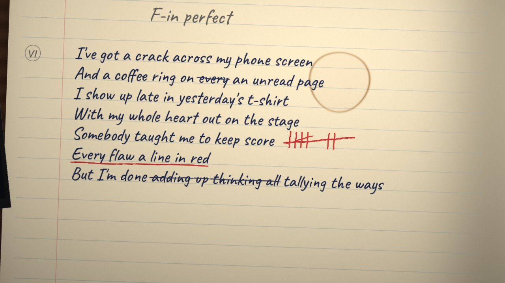
| 0:00 the blank page | Her notebook open under a desk lamp, late. A ruled page, blank but for her working title in pencil, 'F-in perfect' (the song's first title). Her phone on the desk at the page's edge. |
|---|---|
| 0:00.9 'crack' | She writes each line as she sings it, a word as it's sung. On 'crack' her phone's glass cracks. |
| 0:04.2 'coffee ring' | She writes 'on every', strikes 'every' and writes 'an unread page' (the line's first draft). A mug comes down on the page and lifts, and its ring stays, half over the words. |
| 0:08.8 'late' | 'I show up late': each word lands a beat after she sings it. |
| 0:16.3 the band in | The camera starts down the page with the writing. |
| 0:18.8 the rim-shots | 'Somebody taught me to keep score': a red pen keeps it after the line, a tally a rim-shot. 'Every flaw a line in red' is underlined in red. |
| 0:24.6 'done' | 'But I'm done adding up', struck; 'thinking all', struck; 'tallying the ways' (both earlier drafts). On 'done' the tallies are struck through. |
So call me a mess, call me a work in progressI'll wear it like a name I chose (twice)
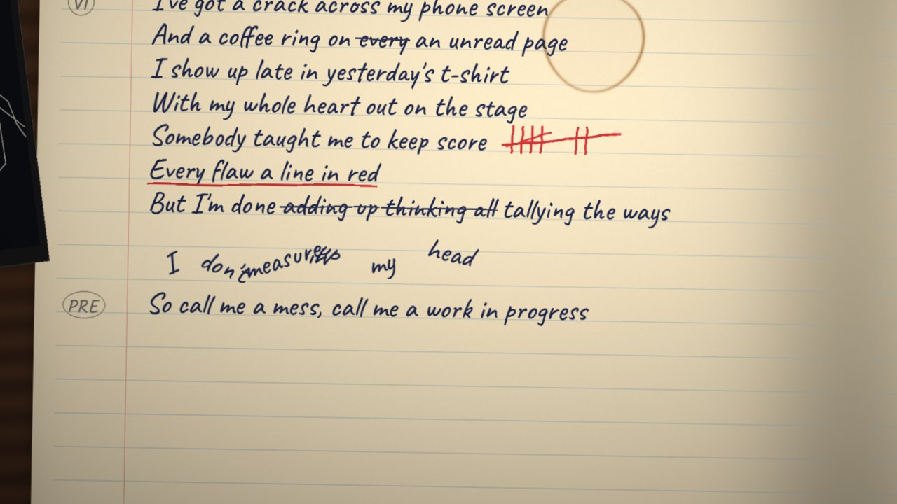
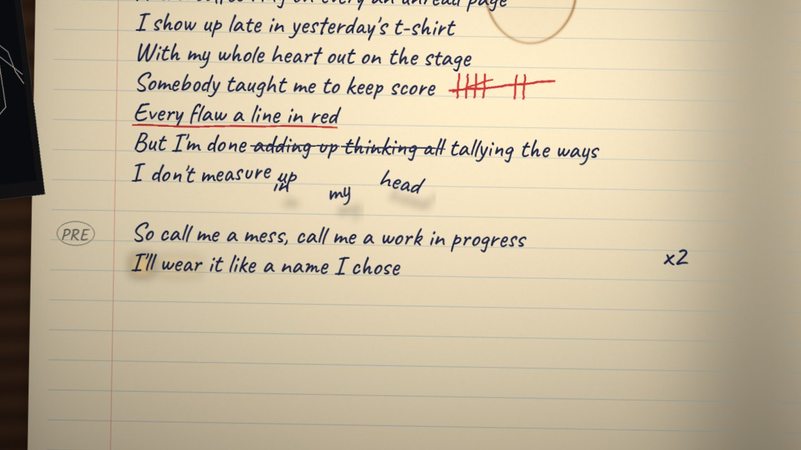
| 0:32.5 the clap on 'mess' | The clap knocks verse 1's last line off its ruled line, word by word, as if she'd slapped the desk: the page is a mess. |
|---|---|
| 0:34.0 the drums drop | The hush. The words lie where they fell; the writing rests. |
| 0:40.4 her harmonies | She doesn't write the pre-chorus again: 'x2' in the margin (the song had it once until the songwriter doubled it), and the same two lines light again as she sings them. The knocked words lift off the paper, their shadows under them, as her harmonies swell in. |
| 0:42.3 the finger clicks | A word drops back onto its line on each click, near its place but never quite straight again. |
I'm fuckin' perfectNot the airbrushed kind, the honest kindThe dropped-call, spilled-wine, still-here kindI'm fuckin' perfectEvery dent in me is proof I triedAnd I'm done sanding down my jagged sideI'm fuckin' perfect
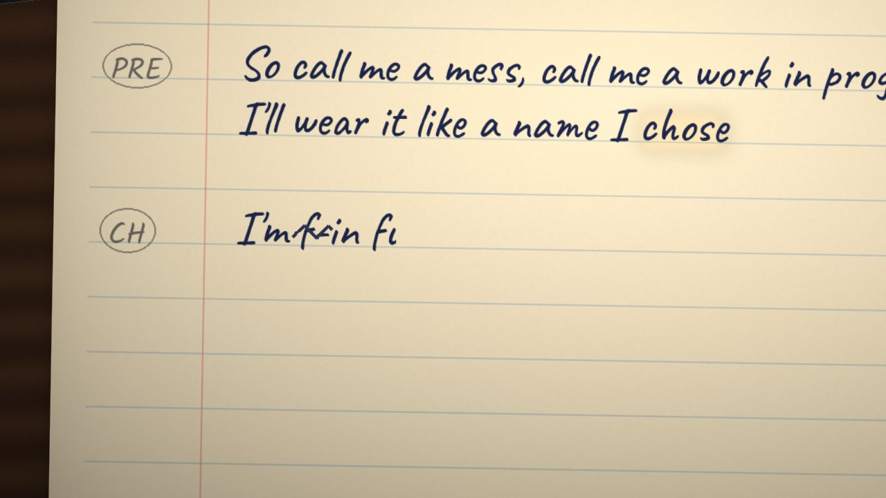
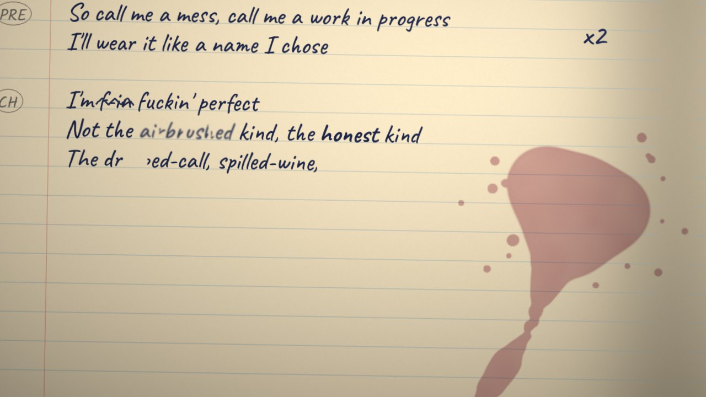
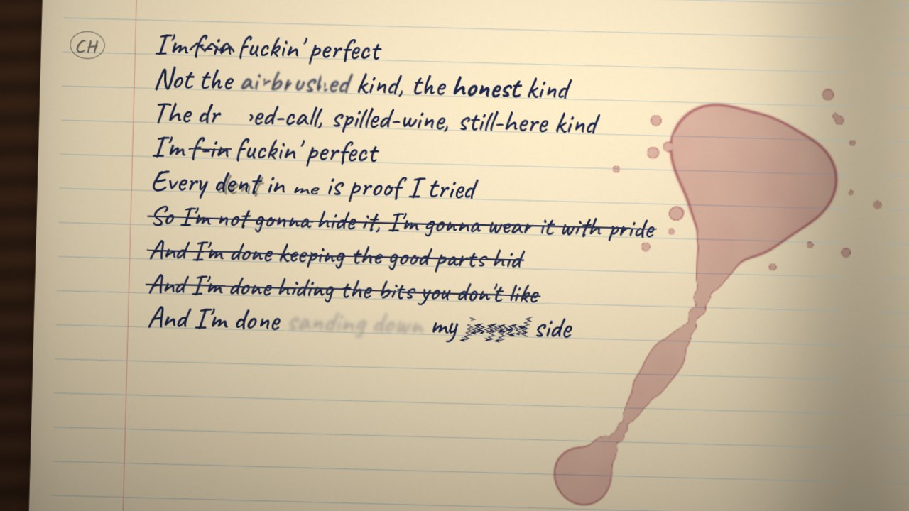
| 0:48.9 'I'm f-in' | She writes 'f-in' (Wren's first draft) and scribbles it out on the song's own dropout (0:49.48), the sound gone for a frame; 'fuckin'' comes back with the sound. |
|---|---|
| 0:51.0 'airbrushed' | 'airbrushed' soft at its edges, a gap in it for each of the three cuts through it; 'honest' pressed hard. |
| 0:54.9 'dropped-call' | The ink breaks while the sound's gone: a gap in 'dropped-call' where the call dropped (Scope's blink, now in ink). On 'spilled-wine' her glass goes over by the margin: the wine puddles there and a run escapes down the page to its foot. |
| 1:00.8 'Every dent' | The glitched 'E-e-every' as the ink stuttering. 'dent' pressed into the paper; the m of 'me' squashed (the songwriter's 'squashed m'). |
| 1:03.4 'proof I tried' | Proof she tried: the next line's three earlier versions written a beat each and struck through ('wear it with pride', 'keeping the good parts hid', 'hiding the bits you don't like'). |
| 1:04.9 'sanding down my jagged side' | An eraser rubs at 'sanding down'; 'jagged' is written jagged and stays jagged (the songwriter's note: 'she delivers it defiantly'). |
| 1:09.6 the drums drop | The hush; the writing rests. |
I've apologised for taking upToo much room, too loud, too muchRewrote myself in smaller lettersJust to fit inside your touchBut the mirror never asked meTo be somebody I'm notSo I'm keeping all the piecesAnd I'm loving every knot
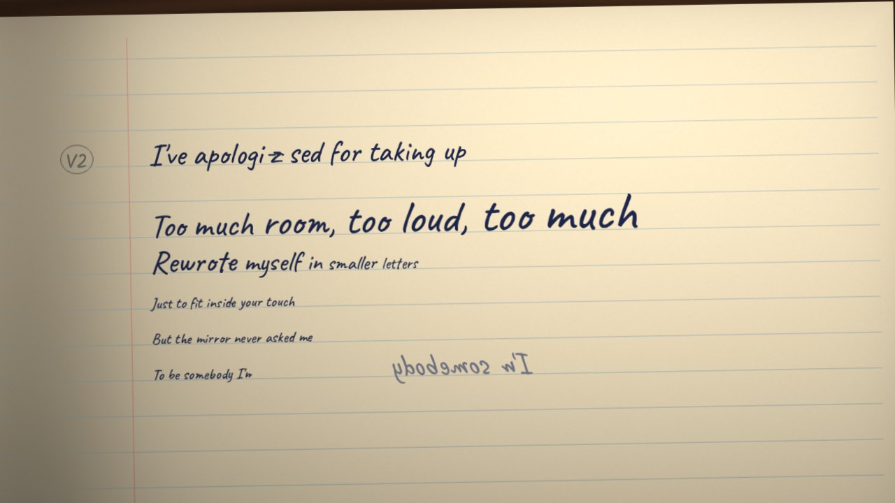
| 1:12.9 'apologised' | She writes 'apologi', then a 'z', crosses it out, and writes 'sed' (the song's spelling changed too). |
|---|---|
| 1:15.0 the cut | A gap in the ink between 'taking up' and 'too much room', where the sound cuts. |
| 1:15.4 'Too much room' | Each word bigger than the last: taking up too much room. |
| 1:17.2 'smaller letters' | Each word smaller than the last, and the next lines tiny. |
| 1:21.6 'the mirror' | Beside her tiny 'To be somebody I'm not', its mirror image at her real size. |
| 1:25.3 'keeping all the pieces' | Back to her own size. |
| The skip | The songwriter's 'skipping' note on reel 20: the line's parts stepping left and right with her syllables. Not in the frames yet. |
So call me a mess, call me a work in progressI'll wear it like a name I chose
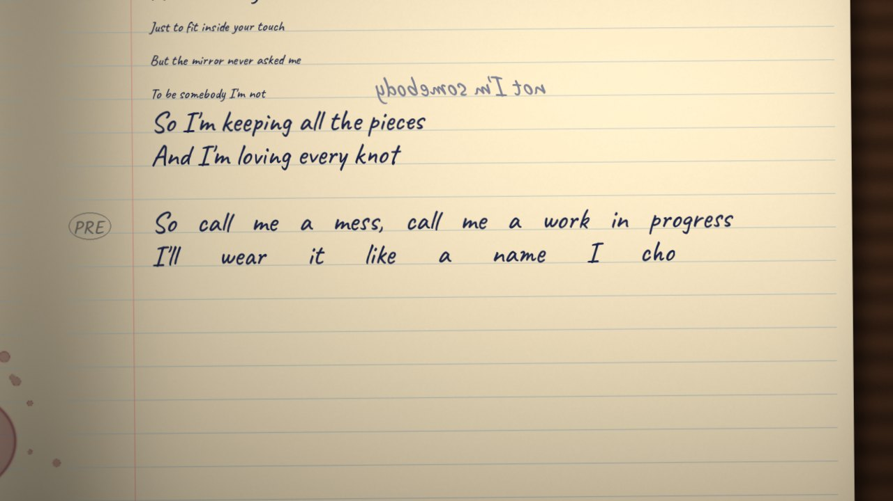
| 1:29.1 | She sings the pre-chorus slow, twice its length, and writes it stretched across the page, its words pulled apart (the songwriter's 'stretching an elastic band'). |
|---|---|
| 1:44.3 'Chorus' | Under it she writes 'Chorus' and an arrow back to the left-hand page: she won't write it out twice. |
| 1:45.4 the snap | On the chorus's downbeat the camera snaps back across the spread to chorus 1, the elastic let go. |
I'm fuckin' perfectNot the airbrushed kind, the honest kindThe dropped-call, spilled-wine, still-here kindI'm fuckin' perfectEvery dent in me is proof I triedAnd I'm done sanding down my jagged sideI'm fuckin' perfect (as chorus 1)
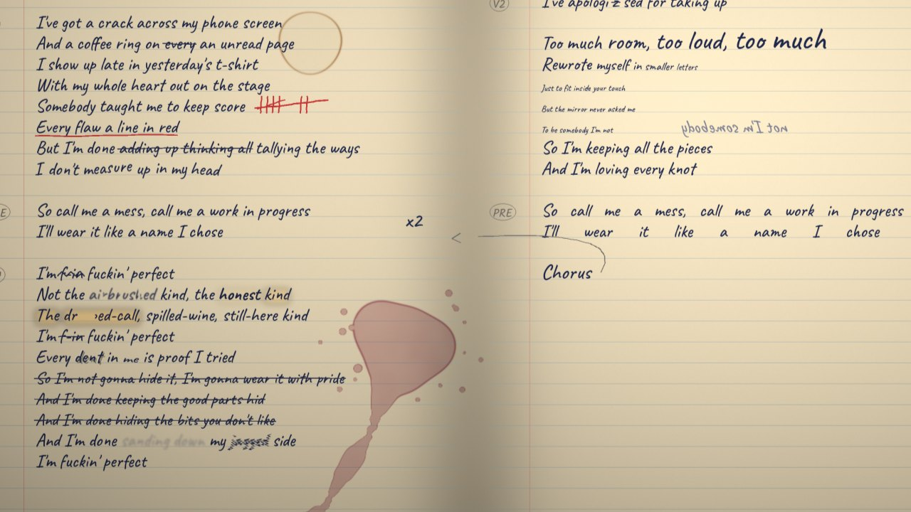
| 1:44.7 | The camera lands on chorus 1 as written, its words lighting again as she sings them (Scope's Carry: 'reusing words to draw attention to the reuse'), the struck tries still there. |
|---|---|
| 1:46.4 'N-n-n-not' | The glitch as a stutter of light on 'Not'. |
| 1:51.7 'spilled-wine' | A refilled glass, set down, leaves its ring by the pre-chorus. |
| 1:51.2 'dropped-call' | 'dropped-call' goes dark for the silence, where its gap is; at the page's edge her phone lights, 'call ended'. |
| 'kind' | The songwriter's note on 'kind': shoved aside 'as someone might clear a space on their desk'. In the build. |
| 2:05.5 the drums drop | The hush, and the camera drifts back across to the right-hand page, where the bridge will go. |
Nobody's clean, nobody's finishedNobody's living without a scarThe ones who call you brokenNever held a mended thing and called it art
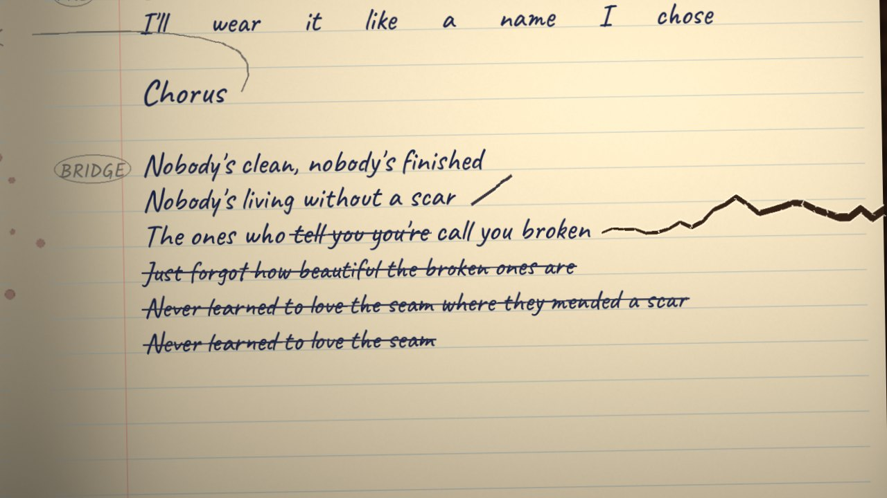
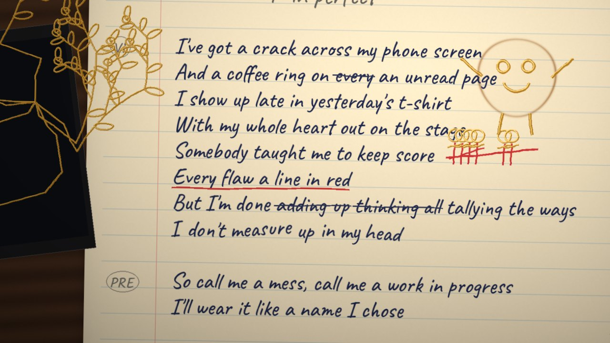
| 2:08.8 'Nobody's clean' | Half-time and almost unaccompanied: she writes slowly. |
|---|---|
| 2:13.3 'scar' | The paper gouged beside 'scar', hard enough to scar it. |
| 2:14.1 the tries | The bridge's last line is the song's most rewritten: three earlier versions written and struck, a bar each ('Just forgot how beautiful the broken ones are', 'Never learned to love the seam where they mended a scar', 'Never learned to love the seam'). |
| 2:16.6 'tell you you're' | Struck for 'call you'. |
| 2:17.8 'broken', the band back | The page tears, from its edge in to the word. |
| 2:19.9 'mended' | Gold. The tear first: mended in gold, kintsugi on paper. Then the gold goes back over the page, a mark a step: the phone's crack gold in the glass and grown out across the margin as a tree in leaf; the coffee ring a face; the tallies little people; each wine stain a character. |
| 2:21.7 'art', riding the note | The camera pulls back as she holds the note: her page, its marks made into drawings. Called it art. |
I'm fuckin' perfectNot the hairbrushed kind, the messy kindThe dropped-call, spilled-wine, we're-still-here kindI'm f-f-fuckin' perfectEvery dent in me is proof I triedAnd I'm done sanding down my jagged sideI'm fuckin' perfect
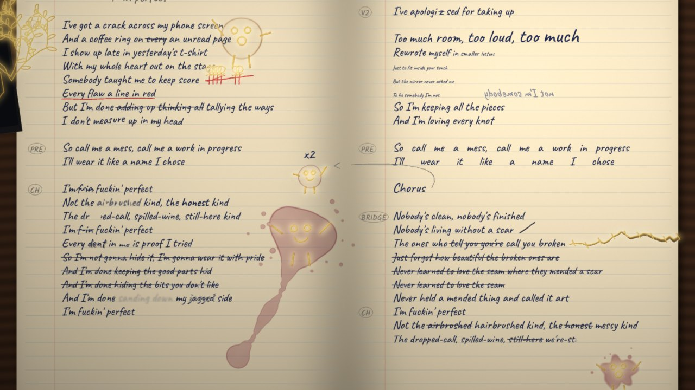
| 2:25.4 | Written out fresh on the right-hand page, because it changed: 'Not the airbrushed hairbrushed kind, the honest messy kind', the chorus's old words struck for the new. |
|---|---|
| 2:26 the drawings sing | Every character on the spread sings along, rowdily: each on its own beat, bobbing, arms going, mouths wide, the gold brighter. |
| 2:33.6 'we're-still-here' | 'still-here' struck for 'we're-still-here', and the camera pulls back to show them all singing. The main point of impact. |
| 2:35.3 'f-f-fuckin'' | The lyric's one written stutter, written as she sings it. |
| 2:46.6 the drums drop | The drawings hush; the camera holds wide. |
(six hums and a long one: vocal play, not lettered)
| 2:50.5 the dead stop | The lamp goes out for the 0.2 s of silence. |
|---|---|
| 2:50.7 the hums | Back on. The characters sway on her hums, lazy and warm (the songwriter's 'maybe a sway?'). |
| 3:04.2 the title | She strikes 'F-in perfect' at the top and writes 'Every Dent' (the song's own retitling, the day after it was written). |
| 3:06 | The whole spread, pulled back: the full song, warts and all. |
| 3:07.8 the cut-off | The song stops dead mid-groove, and the notebook shuts on it. |